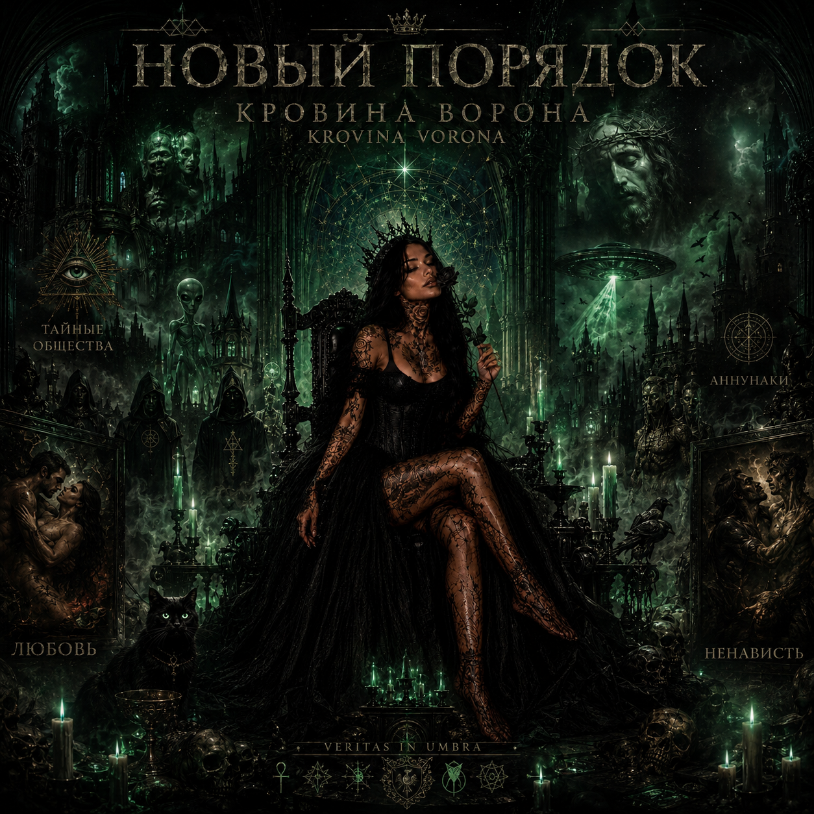
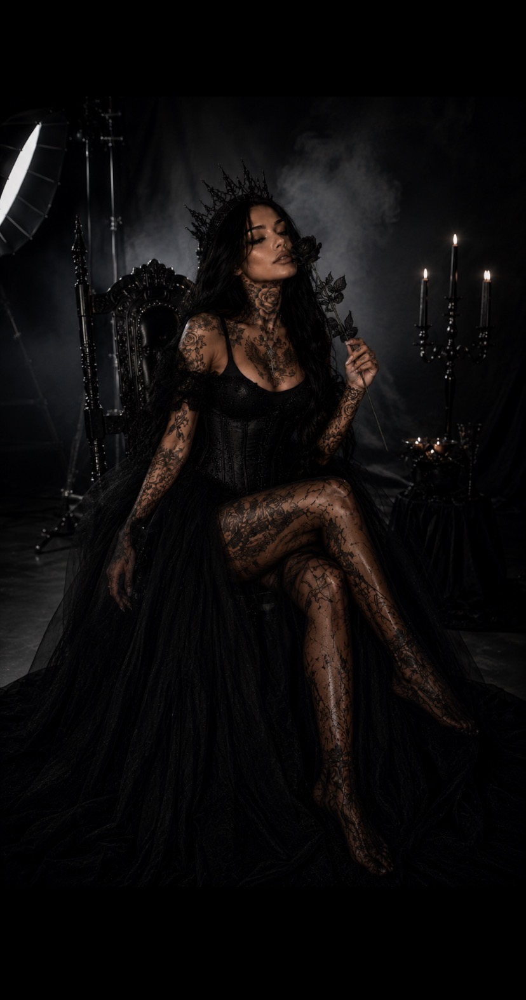
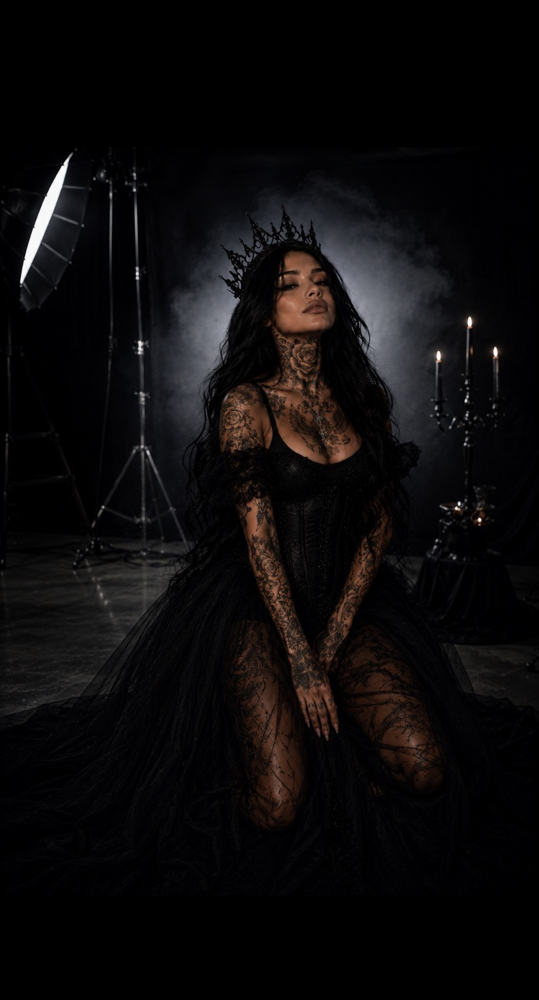

КРОВИНА ВОРОНА
KROVINA VORONA
Artiste indépendante • Parolière • Ghostwriter
« Entre le passé et le nouveau monde. »
Artiste indépendante • Parolière • Ghostwriter
« Entre le passé et le nouveau monde. »


Nouvel Ordre est le projet actuel de Krovina Vorona : un univers sombre, mystique et introspectif où se rencontrent spiritualité, amour, société, occultisme, folklore d'Europe de l'Est et quête de vérité.
Le projet rassemble cinq morceaux et représente une première porte vers l'univers artistique de Krovina Vorona.





RÉSEAUX